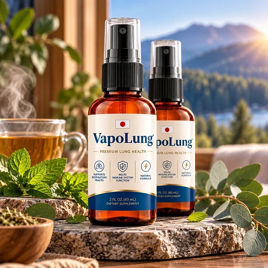
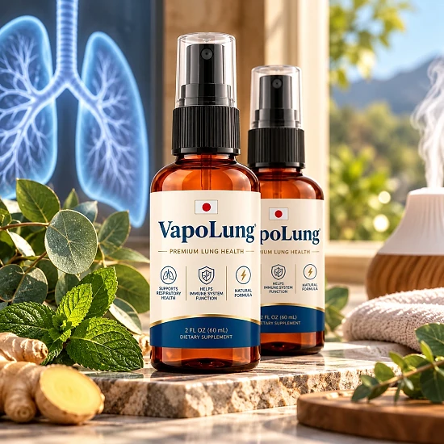
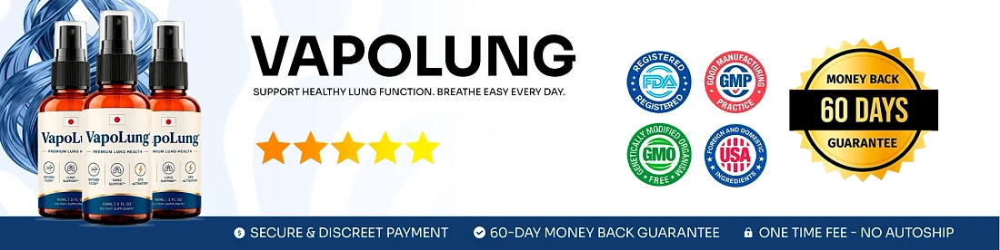

What Is VapoLung And How Does It Work?
VapoLung is a natural oral spray for respiratory support. Each 2 fl oz (60 mL) bottle holds a liquid botanical blend made to help the airways feel clear and to keep breathing comfortable from morning to night.
The official website describes VapoLung as a combination of concentrated plant extracts known for supporting lung health and respiratory cleansing. The formula is built on three of them: Mullein leaf extract (10:1), Ginger root extract and Organic Lemon extract. You use it as a spray in the mouth, so there are no capsules to swallow.
The brand explains the idea in a simple way. Mullein is meant to help loosen mucus and open the way for air to flow. Ginger is meant to relax the respiratory passages and reduce discomfort in the chest. Organic Lemon is meant to purify the respiratory tract and leave a fresh feeling in the mouth and throat.
According to the website, the expected result is breathing that feels deeper and lighter, with less heaviness in the chest, in a routine that takes a few seconds a day.
The checkout is run by BuyGoods, and the official FAQ says each order is a single payment, without auto-ship or recurring charges.
As with any supplement, experiences differ from one person to another. VapoLung is meant to sit alongside good habits such as regular walks, enough water, quality sleep and staying away from smoke, and it does not replace an inhaler or any treatment your doctor has prescribed. The website does not give a fixed timeline either, so allow a few weeks of steady use before you draw conclusions.
VapoLung is a dietary supplement and is not intended to diagnose, treat, cure, or prevent any disease.
VapoLung Ingredients
According to the official website, VapoLung relies on a short list of three botanical extracts, each picked for a different part of respiratory comfort:
Mullein (Verbascum thapsus) Leaf Extract 10:1: a concentrated leaf extract with a long history in herbal tradition for clearing the airways and helping mucus move out of the lungs.
Ginger (Zingiber officinale) Root Extract: a warming root traditionally used to calm irritated passages and relieve a tight feeling in the chest.
Organic Lemon Extract: an antioxidant citrus extract added to purify the mouth and throat and keep the breath fresh.
The amount of each extract per serving is not listed on the website, because the full Supplement Facts panel is not published online. The roles above describe how these plants are traditionally used, not proven outcomes. Read the label on the bottle when it arrives and share it with your doctor, above all if you already take medication or other supplements every day. With only three extracts, it is also easy to check whether one of them is a plant you already react to.
VapoLung Side Effects
No specific side effects are listed on the official website, which says VapoLung is produced under strict quality control. The FAQ does call it an active supplement and asks users not to go beyond the suggested serving.
The brand also advises that pregnant or nursing women, children under 18 and anyone with a known medical condition talk to a physician first. People who live with a long-term lung condition and already follow a care plan should be extra careful, since an herbal spray is not a substitute for prescribed medicine or an inhaler.
Ginger can interact with blood-thinning medicines and may upset a sensitive stomach. Anyone allergic to mullein or other plants of the same family could react to the extract, and the lemon in the formula may leave a slight tingling taste.
Because the full label is not shown online, take the bottle with you when you see your doctor. If breathing gets harder, or you notice swelling, a rash or another unexpected reaction, stop using the spray and get medical help without delay. Keeping the bottle and its packaging lets a professional see exactly what you took and when you started.
VapoLung Dosage
The official FAQ gives clear directions: shake the bottle well and apply 4 sprays (0.60 mL) into your mouth or onto your tongue, once a day.
The brand suggests doing this in the morning, so your airways stay comfortable and your breathing feels free during the day. Linking the spray to something you already do every morning, such as breakfast or getting dressed, helps you remember it.
Stay within the suggested serving, because the website describes VapoLung as an active supplement. If you use an inhaler, take regular medication or have a respiratory condition, check with your doctor before adding the spray, and do not stop or change any treatment on your own.
According to the website, steady use over several months gives the plant extracts time to act consistently. Every person responds differently, so a simple weekly note about how your breathing feels can help you and your doctor see whether the routine is worth keeping.
VapoLung fits best into a lifestyle with clean air, daily movement, enough water and no smoking, every day of the week, at home and outdoors.
VapoLung – Refund Policy
VapoLung comes with a 60-day Results or Refund Guarantee that starts on the date of purchase, so you have two months to try the spray and see whether it suits you.
The refund rules on the official website set a minimum trial period of 30 days, and the return must be started no later than 60 days after purchase. Only sealed bottles can be refunded, shipping and customs fees are not returned, the customer pays for return shipping, and a 20% restocking fee is taken from the total amount.
Step 1 – Ask for the authorization code: write to the support team at contact@customercs.com to open your return. Replies usually arrive within 48 business hours.
Step 2 – Return the bottles: send the sealed bottles back following the instructions that come with your code.
Step 3 – Get your money back: after the returned items arrive and are checked, the refund is sent to your original payment method. It can take 5 to 10 business days to show on your statement, depending on your bank, and a confirmation email is sent when it is done.
Keep any bottles you have not opened sealed until you are sure, and save your BuyGoods order email with the order number.
VapoLung Customer Reviews
-
Jessica Martinez — Austin, TXVerified Purchase – 6 Bottles
“I’ve struggled with seasonal congestion for years, and it always made me feel exhausted and foggy. Since I started using VapoLung, I can actually breathe clearly through my nose again. It’s like a weight has been lifted off my chest. I use it every morning, and my entire day feels different — more energy, more focus, just better overall.”
-
James Miller — Chicago, ILVerified Purchase – 6 Bottles
“I quit smoking three years ago, but my lungs never felt the same. I’d get winded going up stairs and always had this tightness in my chest. VapoLung changed everything. Within two weeks, I noticed I could take deeper breaths without that uncomfortable feeling. Now I actually look forward to my morning walks instead of dreading them.”
-
Samantha Lee — Miami, FLVerified Purchase – 6 Bottles
“… A friend recommended VapoLung, and honestly, I was skeptical. But after just a few days, I noticed a real difference. Now I sleep through the night and wake up actually feeling rested. It’s been a game-changer.”
VapoLung – Where To Buy
The place to buy VapoLung is its official website, where payment goes through the secure checkout of BuyGoods, a well-established online retailer. The FAQ confirms that each order is a single payment, with no auto-ship, no recurring charges and no hidden fees.
Copies sold by unknown sellers on other sites can look identical, yet nobody can confirm where they came from, when they expire or how they were kept, and that is a real risk for quality and safety. Orders placed outside the official source may not be protected by the 60-day guarantee.
For this reason, most people choose to buy VapoLung straight from the official website, where they receive the authentic original product together with customer support and the complete guarantee.
Before you pay, confirm that you are on the official VapoLung website so you do not end up with a counterfeit. A quick look at the address bar of your browser is enough to protect your order.
To ensure you’re getting the authentic product, most users choose to visit the official website.
Is VapoLung A Scam?
From the information on the official website, VapoLung does not look like a scam. It is a genuine herbal oral spray for respiratory support, and orders are handled by BuyGoods, a known retailer.
There are good signs: the website names the three botanical extracts, explains how to use the spray, offers a support email with a stated reply time, describes the refund process in detail and confirms that every order is a single payment with no auto-ship.
There are also limits worth knowing. The full Supplement Facts panel is not published online, so the strength of each extract is not disclosed. The same formula and the same customer stories appear on another spray sold under a different name, which suggests that both products come from the same producer. The refund terms are also strict: only sealed bottles are accepted, the customer pays return shipping and a 20% restocking fee is deducted.
For adults looking for an easy daily herbal spray to support clear and comfortable breathing, VapoLung may be a reasonable choice, preferably bought on the official website and approved by a doctor first, especially when there is a lung condition or an inhaler in use.
For those who want to verify product details or check current availability, the official VapoLung website remains the safest option.

Check Availability On Official Website
